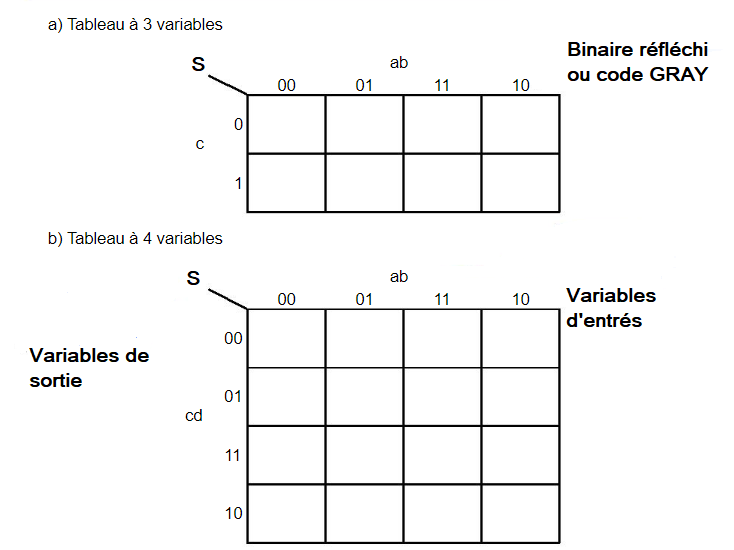
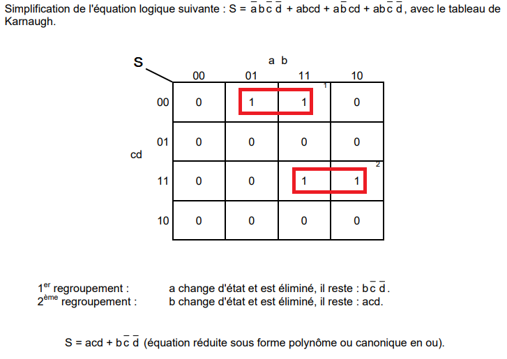
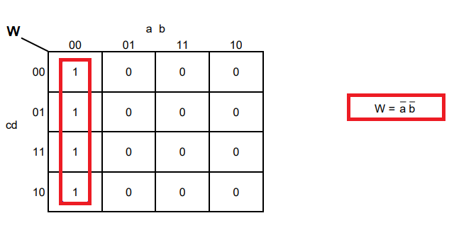
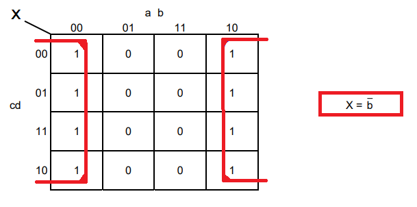
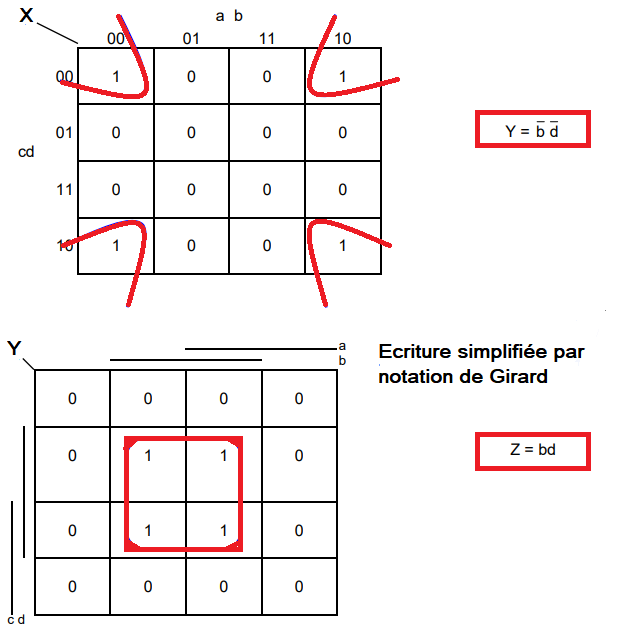

1- INTRODUCTION
La réduction, pour une même expression, du nombre d'opérateurs et/ou du nombre de variables exprimées, conduit à une écriture simplifiée de cette expression. Il existe un grand nombre de méthodes de simplification d'expression booléenne, parmi lesquelles on peut distinguer :
- la simplification par le tableau de Karnaugh
On construit le tableau de Karnaugh de la fonction à simplifier. On recherche les cases adjacentes qui ont pour valeur 1 et on les regroupe, par puissance de 2, en paquets les plus gros possibles. À l'usage, cette méthode s'avère la plus performante.
2- CONSTRUCTION DU TABLEAU DE KARNAUGH
3- EXEMPLES



Vidéo explicative :.